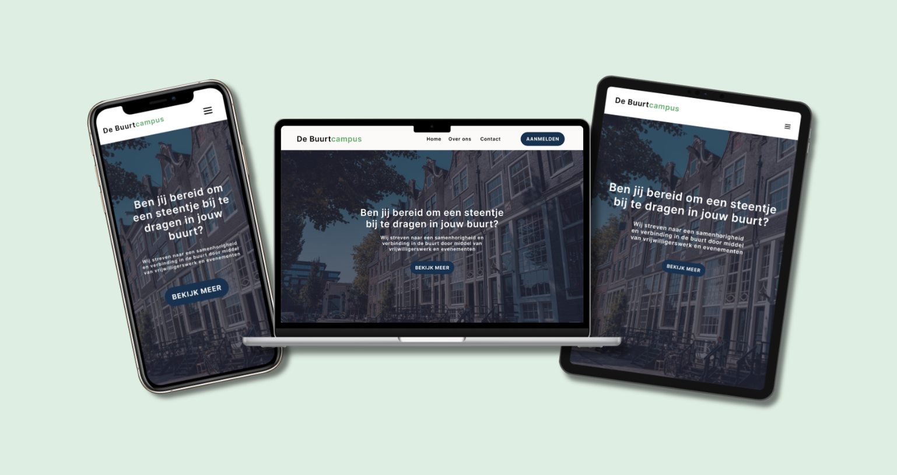
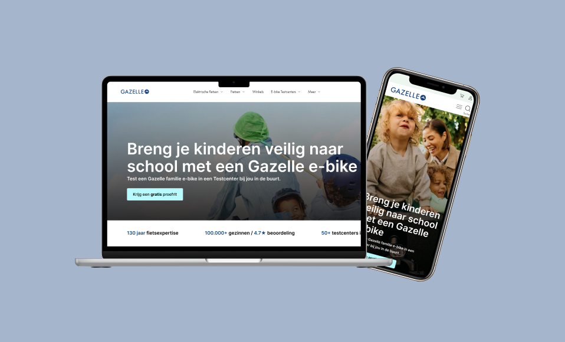
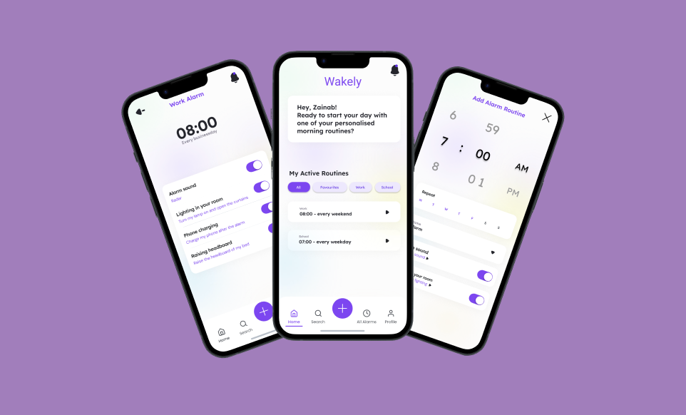
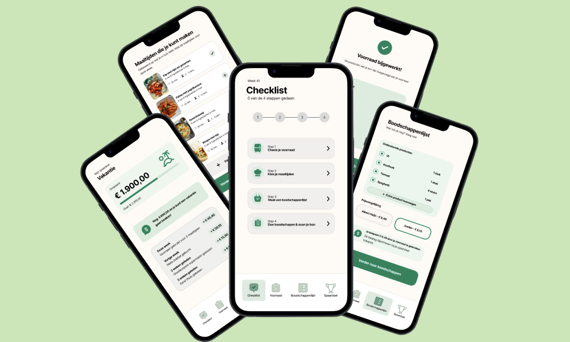
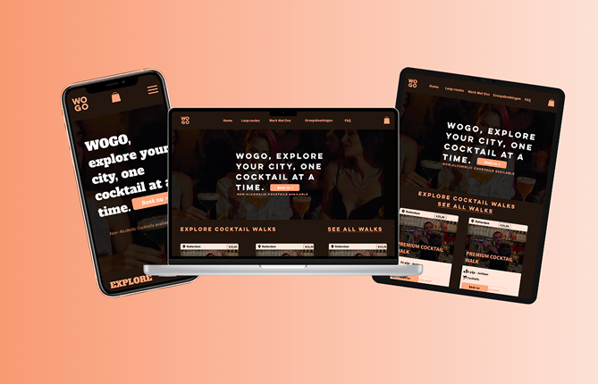
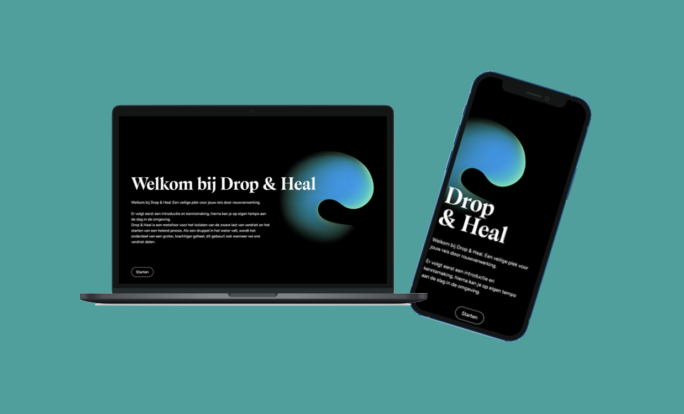
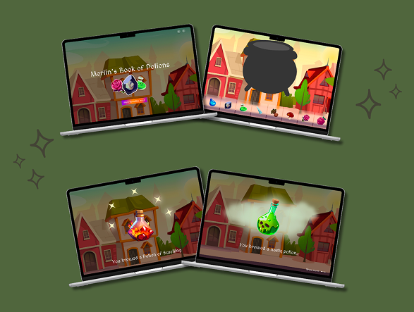
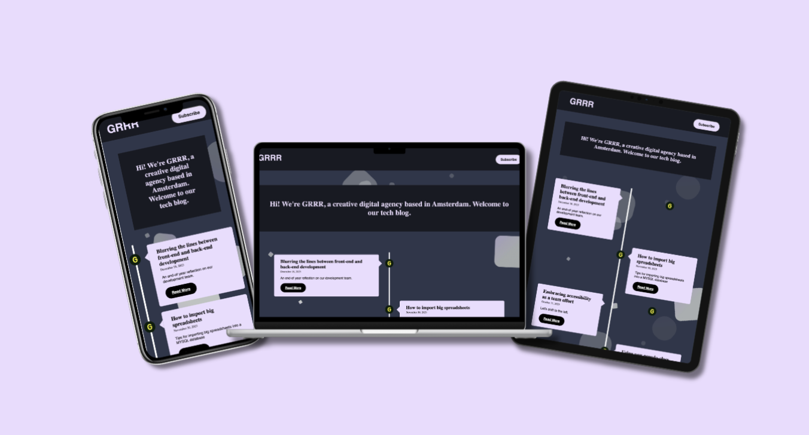
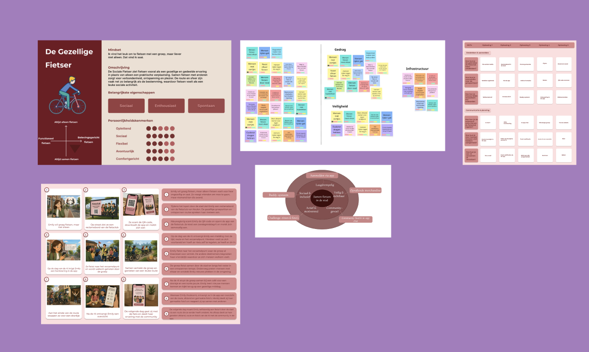

Zainab el Faiz
Student Communication & Multimedia Design
Ik combineer techniek en creativiteit om digitale ervaringen te ontwerpen
en bouwen die prettig en toegankelijk zijn voor iedereen.
Mijn projecten

Gazelle e-bike

Wakely

Minor Behavior Design

WOGO — Explore your city

Drop & Heal

Merlin's Book of Potions

GRRR tech blog

CMD: onderzoek naar slaap & fietsen
Er staan nog geen CMD-projecten in dit overzicht.
Over mij
Ik combineer mijn achtergrond in front-end development met een gebruikersgerichte blik. Ik kan een vraagstuk verkennen, inzichten vertalen naar een concept en dat uitwerken tot een prototype of responsive interface. Tijdens dat proces let ik op duidelijkheid, toegankelijkheid en kwaliteit. Ik zoek een stage waarin ik mijn ideeën in de praktijk kan brengen en verder kan groeien.
Ontdek mijn skillsFrontend development
Ik werk met HTML, CSS, JavaScript en frameworks als SvelteKit, Astro en React. Ik bouw responsive interfaces met aandacht voor performance, progressive enhancement en toegankelijkheid.
UX research en design
Ik onderzoek gebruikersbehoeften en vertaal inzichten naar wireframes, prototypes en design systems. Ik werk met Figma en Adobe en houd responsive gebruik en toegankelijkheid in beeld.
Toegankelijkheid en performance
Ik heb interesse in toegankelijke, gebruiksvriendelijke en snelle digitale producten. Daarbij blijf ik nieuwsgierig naar nieuwe technieken en manieren om mijn werk te verbeteren.
Opleiding
Communication & Multimedia Design
Hogeschool van Amsterdam · 2025–heden
AD Frontend Design & Development
Hogeschool van Amsterdam · 2023–2025
Lumion
Havo, Economie & Maatschappij · 2016–2021
Wat ik meebreng
Tools, technieken en kwaliteiten die ik inzet
Development stack
HTML, CSS, JavaScript en frameworks als SvelteKit, Astro en React. Ik let op responsive design, progressive enhancement en performance.
UX & design
User research, Figma, Adobe, wireframing, prototyping en design systems. Ik ontwerp empathisch vanuit gebruikersbehoeften.
Kwaliteit & samenwerking
Toegankelijkheid, leergierigheid, probleemoplossend vermogen, communicatie en oog voor detail kenmerken mijn aanpak.
Programma’s & frameworks
- HTML
- CSS
- JavaScript
- SvelteKit
- Astro
- React
- Figma
- Adobe